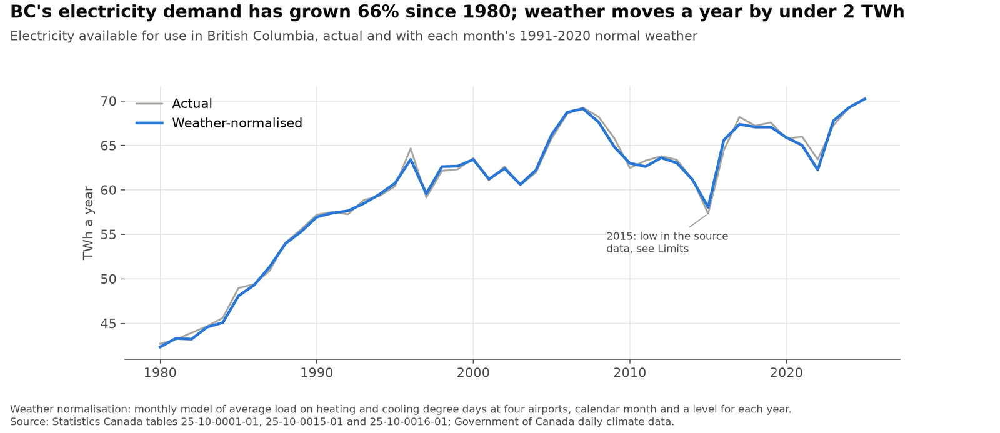

BC's electricity balance: the drought, imports and demand since 1980
An independent look at British Columbia's electricity since 1980, built from open data in Python. It asks why BC imported so much power in 2023-2025, what that trade cost, how much of the growth in demand is weather, and how demand's response to temperature has changed. The results below are as of October 2026, with data through July 2026; the live dashboard updates them each month.
Personal project: my own analysis of publicly available data. It is not associated with my work for any current or past employer and does not represent their views.

What it shows
- In 2023 low water cut BC's hydro output by 19%, to 49.1 TWh against 60.4 TWh a year in 2013-2022, and BC imported 17% of the power it used (11.2 TWh net, against average net exports of 3.1 TWh). Of the 14.3 TWh swing, lower hydro output accounts for 11.3 TWh and growth in weather-normalised demand for 3.5 TWh.
- By 2025 demand growth, not water, kept imports high: net imports were still 8.7 TWh above the 2013-2022 average, 6.0 TWh of it from demand growth and 3.1 TWh from lower hydro output. In the 12 months to July 2026, with hydro output 9% above that average, BC was back to net exports of 2.7 TWh.
- BC still sells high and buys low, but the drought turned trade into a cost. In 2023 it paid $1.52 billion for US power ($92 per MWh) and earned $1.11 billion for its exports ($168 per MWh): a $411 million deficit, against a $972 million surplus in 2022.
- Demand has grown two thirds since 1980, from 42.3 to 70.2 TWh a year after removing the weather, which moved any single year by at most 1.2 TWh.
- A month that is a degree colder every day now adds about 143 MW of average load (90% band 129-158), three times the 44 MW of 1980, while demand grew 1.7 times; a degree hotter adds about 455 MW, up from about 210 MW around 2000. Both changes are statistically clear (p < 0.001). The data cannot show the cause.

How it works
Monthly generation, hydro output, receipts, deliveries and electricity available for use in BC come from Statistics Canada's monthly electric power tables (one for 1950-2007, two from 2008); electricity available for use, generation plus receipts minus deliveries, stands in for demand. The value of trade with the United States comes from the Canada Energy Regulator, whose volumes match Statistics Canada's. Heating and cooling degree days come from daily temperatures at the Vancouver, Victoria, Kamloops and Prince George airports.
Weather-normalised demand comes from a monthly regression of average load on a level for each year, calendar month, and heating and cooling degrees with separate effects for three periods, which explains 97% of the monthly variation; each month's degree days are then replaced by the 1991-2020 normal. Because net imports equal demand minus generation, each year's change from the 2013-2022 average splits exactly into demand growth, weather, lower hydro output and other generation. This is accounting, not cause: BC Hydro chooses how much to generate and how much to buy.
For change over time, a state-space model lets the heating and cooling effects follow random walks that can move each January, alongside a smooth trend, fixed calendar-month effects and an error that carries over from month to month. The Kalman smoother traces each effect with a 90% band, and likelihood-ratio tests compare them with constant effects. Tests check the data handling and the model recovering a known drifting effect from simulated data, and a monthly workflow rebuilds the dashboard once it passes checks on the new data.


Limits
- Statistics Canada's 2015 figure for electricity available for use is about 4 TWh below the years either side; weather does not explain it and I have not found the cause, so it is kept as reported and flagged.
- Monthly, not hourly: there is no openly licensed hourly demand data for BC, so the analysis cannot speak to peaks or to when in the day power flows each way.
- Demand is a residual that includes losses and industry's own generation, and it moves with industry; the year levels and the trend do not separate those changes from others.
- Four airports, equally weighted, stand in for the province. The cooling effect rests on few hot months and is much less precise than the heating effect.
- Trade values are in current dollars and cover the United States only; trade with Alberta appears in the volumes but not the values.
Data
Monthly electric power statistics from Statistics Canada tables 25-10-0001-01 (1950-2007), 25-10-0015-01 and 25-10-0016-01 (2008 onward); monthly electricity exports and imports from the Canada Energy Regulator; daily mean temperatures from Government of Canada daily climate data. Analysis in Python with pandas and statsmodels, with automated tests; code under the MIT licence.
Adapted from Statistics Canada; this does not constitute an endorsement by Statistics Canada of this product. Contains information licensed under the Open Government Licence - Canada.